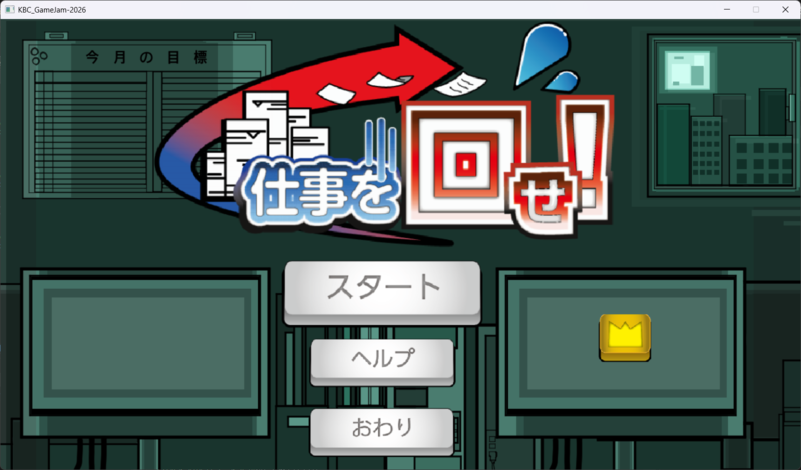
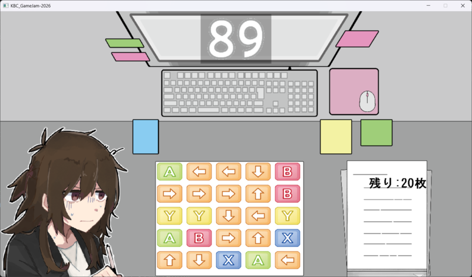
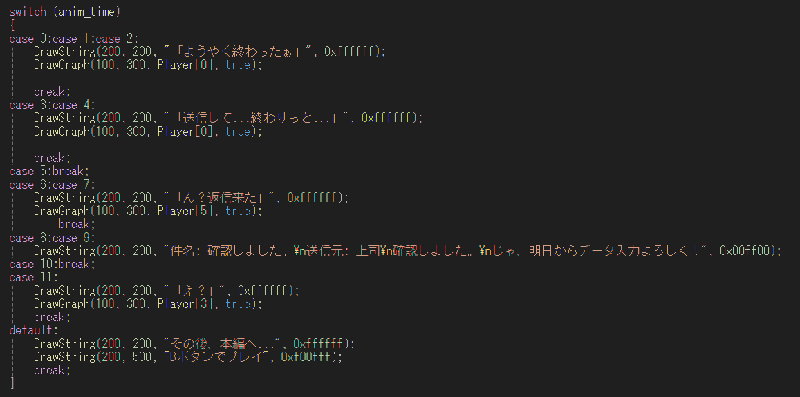
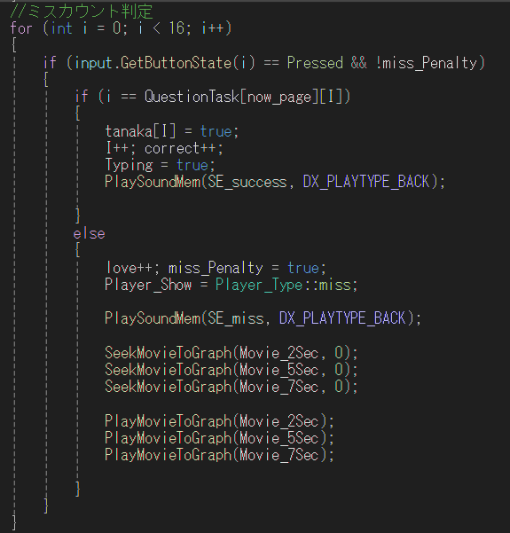

ボタンを早押しで入力して、仕事を回していきます。


ボタン早押しタスクアクション
Microsoft Visual Stadio 2022 / dxlib
1週間
6人(プログラマが4人 イラストレータが2人)
Helpシーンの全てと、InGameの処理の大半
学校で定期的に開催されるゲームジャムで制作した作品です。
今回はインゲームを1年生主導で動いてもらうために、
どうやったらC言語しか学んでいない1年生にC++のコードを理解してもらうのか。
それを考えるのが制作の中で挑戦したことです。
[ヘルプ画面] 今回は物語形式を採用する為、タイマーの細部の調整や人が1行を読むためにどれだけ時間が掛かるのかを意識し、
自然にチュートリアルへと誘導する導線を工夫しました。

当初関数を追加して、何をしたいのかがわかりやすいけど、複雑な形を1年生が考案してくれて、その案を元に簡素に縮めました。
(1年生が考えた物を元に動く形に修正して、手直しした形です。)

途中から1年生主導よりも、自分がほぼ全て書き上げてしまって。1年生がメインプログラマとは言えなくなってしまった。
イラストを描いてくれる人に対する指示出しが曖昧だった。
変数が分かりづらく、コメントアウトも最小限になっていて、可読性が度外視されていた。
コメントアウトは都度都度の癖を改めて付けないといけない。
慣れないことをさせる時の説明の方法と難解さを学んだ